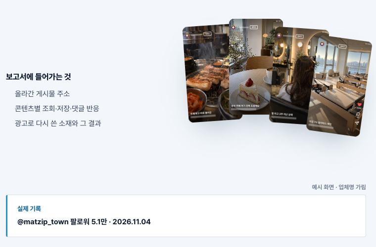
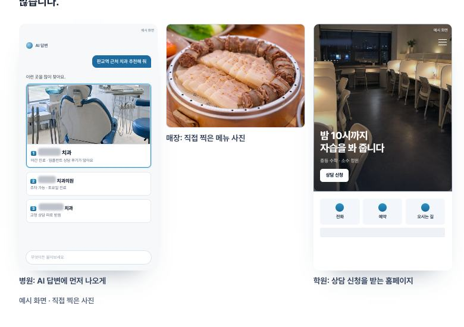
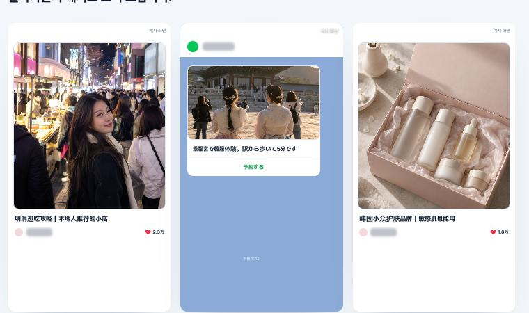
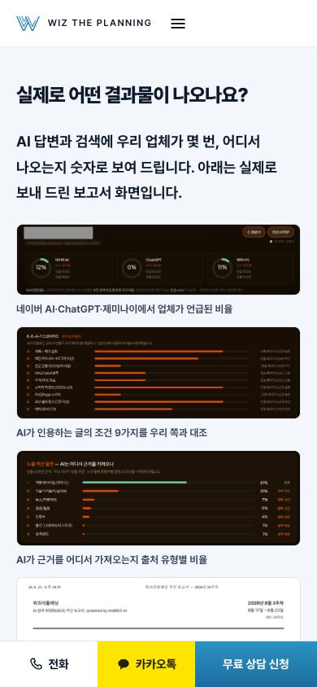
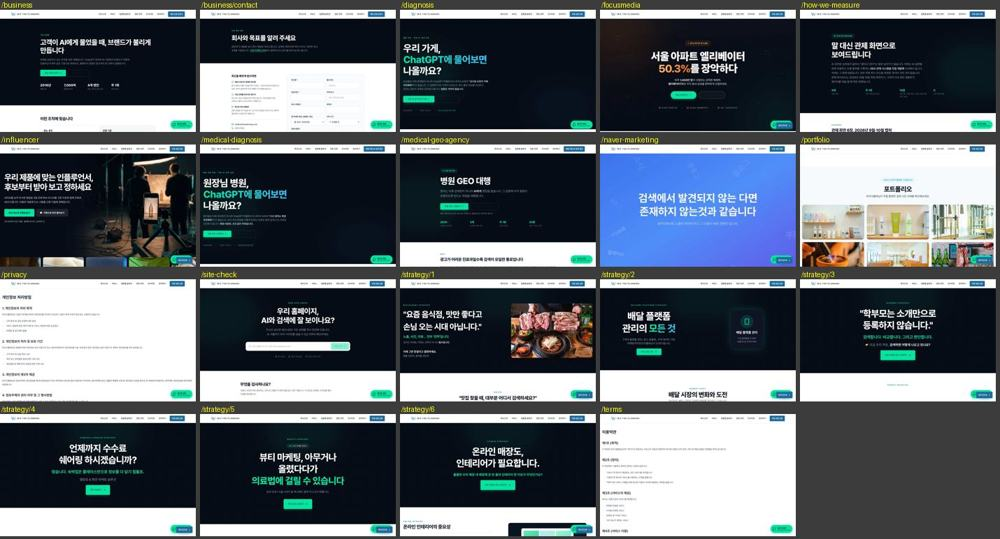

이미 고친 것
- 엔터프라이즈 「통합 캠페인 기획」 아이콘이 흰 바탕에 흰색이라 안 보이던 것 → 코발트
- 상담 신청 쪽 휴대폰: 폼이 857px 아래에서 시작하던 것 → 제목 바로 아래로, 같은 버튼이 두 번 보이던 아래 고정 바는 숨김
- 전문 인력 첫 화면 팀 다섯 칸이 버튼처럼 생겼는데 안 눌리던 것 → 그 서비스 쪽으로 연결
- 택배차 광고판이 짐칸에서 벗어나던 것 → 광고를 짐칸 사진에 합성
고칠 것: 효과에 비해 손이 덜 드는 순서
| 어디 | 지금 | 바꿀 방향 | 효과 |
|---|---|---|---|
| 서비스 8쪽 「보고서에 들어가는 것」 | 기울어진 카드 4장 부채꼴이 8쪽 모두 똑같고, 보고서가 아니라 릴스 사진이 들어 있습니다. AI가 만든 듯 보이는 대표 패턴입니다 | 부채꼴을 빼고 실제 보고서 한 장을 반듯하게. 한 줄짜리 「실제 기록」 상자는 그림 설명으로 합침 | 8 |
| 줄여서 넣은 실제 화면(위플루언서·검색 보고서 5장) | 글자가 4~7px라 「실제 화면」인데 읽을 수 없습니다. 휴대폰 검색 쪽은 1,250px가 그림입니다 | 핵심 숫자 부분만 잘라 크게, 숫자는 설명 글로도. 휴대폰은 1~2장만 | 8 |
| 서비스·업종 쪽 왼쪽 제목 칸(PC) | 오른쪽 내용이 길면 왼쪽 40%가 통째로 빕니다 | 왼쪽 제목이 화면에 붙어 따라오게. 새 모양 없이 값만 | 6 |
| 글로벌·성장 브랜드 LINE 예시 칸 | 칸 아래 절반이 빈 하늘색 판 | 말풍선 1~2개를 더 넣거나 칸 높이를 내용에 맞게 | 6 |
| 휴대폰 사진 묶음(MCN 음식 3장·로컬 사례 3장) | 2칸에 3장이라 마지막 1장이 혼자 크게 남음 | 휴대폰은 3칸 작게 또는 옆으로 넘기기 | 6 |
| 서비스·업종 쪽 글자 크기 | 소제목 34px로 홈(60~78px)보다 너무 작고, 굵은 글씨가 세 겹 | 소제목 40~44px, 요약 문단은 보통 굵기로 | 6 |
| 로컬 비즈니스 업종 사례 3칸 | 휴대폰 틀·그냥 사진·홈페이지 틀이 섞이고 가운데만 키가 절반 | 셋 다 같은 휴대폰 틀·같은 높이 | 5 |
| 떠 있는 「문의 칸으로」(PC) | 본문 오른쪽 끝 글자를 덮음(회사소개) | 오른쪽 여백으로 더 빼기 · 홈과 함께 | 5 |
| 전문 인력 쪽 | 「분야별 시니어」라면서 사람 얼굴·이름이 없음 | 팀장급 사진·이름·경력 연수(사장님 자료) 또는 팀별 인원 수 | 8 |
지금 화면
보고서 구역의 부채꼴 카드

→ 실제 보고서 한 장을 반듯하게
로컬 비즈니스 업종 사례

→ 같은 틀·같은 높이
LINE 예시 칸

→ 말풍선을 더 넣거나 높이를 줄임
휴대폰 검색 쪽 보고서

→ 숫자 부분만 크게, 1~2장만
머리글만 새 것이고 본문은 옛 모양인 19쪽
오늘 19쪽 모두 머리글·바닥글을 새 것으로 바꿨습니다. 본문은 아직 검은 바탕에 초록 버튼입니다. 쪽마다 쓰임이 달라서, 새 디자인으로 다시 짤 쪽과 그대로 둘 쪽을 나눠야 합니다.

| 묶음 | 쪽 | 추천 |
|---|---|---|
| 문의·기업 경로 | 기업 허브 /business · 기업 제안 요청 /business/contact | 먼저 새 디자인으로 다시 짬(기업 손님이 실제로 들어오는 길) |
| 병원 진단 | /medical-diagnosis · /medical-geo-agency | 다음 차례. 병원 무료 진단 신청이 들어오는 길 |
| 글만 있는 쪽 | 개인정보처리방침 · 이용약관 · 측정 방식 | 글 틀만 칼럼 글처럼(가벼움) |
| 옛 서비스·업종 쪽 | /strategy/1~6 · /naver-marketing · /influencer · /focusmedia · /portfolio · /diagnosis · /site-check | 새 서비스·업종 쪽과 겹칩니다. 검색에 걸려 있는 쪽인지 서치콘솔로 확인한 뒤, 새 쪽으로 넘기거나(주소 옮김) 그대로 둘지 정함 |
정할 것
1. 위 「고칠 것」 표를 어디까지 할까요?사장님 자료가 필요한 전문 인력 사진·이름만 빼고 모두 클로드가 할 수 있습니다.
추천: 효과 6점 이상 여덟 가지를 한 번에
2. 옛 본문 19쪽은 어느 묶음부터 다시 짤까요?
추천: 기업 경로 2쪽 → 병원 진단 2쪽 → 글만 있는 3쪽 순서. 옛 서비스·업종 쪽은 서치콘솔 확인 뒤 따로